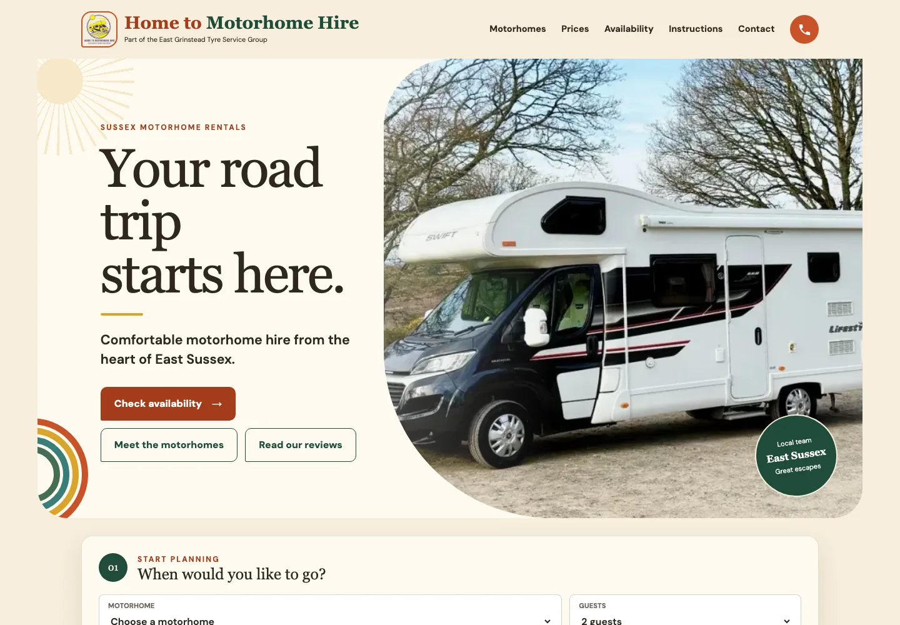
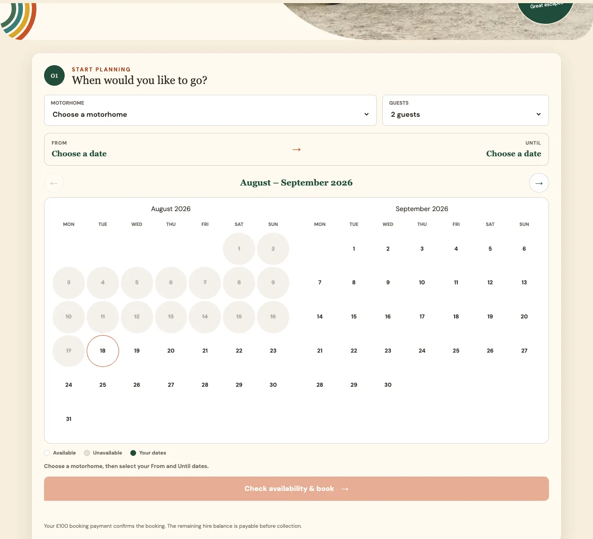

Website & Business Platform Case Study
Home to Motorhome Hire — Astro Website & Custom Booking Platform
A complete replacement for a Wix website and Planyo booking setup, combining a distinctive retro-inspired customer experience with live availability, pricing, payments, customer communication and practical day-to-day admin tools.

The Business Need
Home to Motorhome Hire needed a website that felt warm, memorable and different from a standard rental template. Customers also needed a straightforward way to choose a motorhome, see genuine availability, understand the full hire price and confirm a booking online.
Behind the customer journey, the business needed direct control over bookings, customers, payments, availability and follow-up actions without depending on a generic third-party booking system.
What Was Delivered
- Retro-inspired, mobile-first Astro production website
- Airbnb-style live availability calendar for two motorhomes
- Motorhome and guest selection with 2–31-night hire rules
- Live pricing, vehicle comparison and booking confirmation flow
- Stripe booking payments, balances, deposits and refunds
- D1-backed booking, customer and availability records
- Protected admin dashboard and operational calendar tools
- Customer forms, emails and secure follow-up links
- Responsive images, metadata, schema and search-ready pages
- Staged testing, DNS cutover and production validation
One Connected Platform
From holiday inspiration to daily operations
The customer-facing website and the operational platform work together as one booking journey while remaining clearly separated for security, performance and maintainability.
Astro Website
Fast public pages, vehicle information, pricing and booking entry points.
Booking API
Availability, hire rules, price calculation and reservation records.
Stripe & Email
Confirmation payments, balances, webhooks and customer communication.
Protected Admin
Bookings, customers, vehicles, calendars and operational actions.
Distinctive Astro Website
The public website was designed around a confident retro travel identity rather than a generic rental theme. Strong typography, warm colours, curved photography and simple calls to action give the business a recognisable character while keeping the journey clear.
Astro produces lightweight static pages hosted on Cloudflare Pages. Responsive WebP imagery, sensible loading priorities and limited client-side code keep the experience fast on mobile as well as desktop.
Live Availability & Clear Pricing
The booking journey starts with an interactive calendar rather than a basic enquiry form. Customers choose the Swift Lifestyle 696 or Bailey Approach 765, select the number of guests and see live availability across two months.
Hire rules support stays from 2 to 31 nights. The platform calculates the complete vehicle price, explains chargeable collection and return days and carries the selected dates and vehicle into checkout.

Custom Booking & Admin Platform
A custom Cloudflare Worker and D1 database replace the previous Planyo dependency. The platform stores vehicles, availability, bookings, customers, payment activity and status history around the real motorhome-hire workflow.
The protected admin area brings together booking records, customer details, vehicle calendars, notes and common follow-up actions so the business can manage daily work from desktop or mobile.
Stripe Payments & Customer Communication
A £100 Stripe payment confirms the booking and is deducted from the full hire price. The wider payment lifecycle supports outstanding balances, security deposits, status updates, cancellations and refunds.
Webhooks keep booking records aligned with payment events. Automated emails and secure customer links support the information and follow-up steps required after checkout.
Cloud Architecture & Safe Production Release
The public website, API and protected admin area use separate production domains with carefully limited access. Cloudflare Pages serves the static site, while Workers and D1 handle the dynamic booking services.
The replacement was developed and tested in stages before the live DNS cutover. Availability, checkout, Stripe webhooks, emails, redirects and key admin journeys were verified before the previous Wix setup was retired.
Performance, Accessibility & Search Readiness
The final refinement focused on phone performance, responsive image delivery and stable page loading. Public pages use semantic headings, descriptive metadata, canonical URLs and structured data, with private booking-result and admin journeys kept out of search results.
The result is easier for customers, search engines and emerging AI discovery tools to understand without adding unnecessary weight to the visible experience.
Outcome
Home to Motorhome Hire now has a distinctive, high-performance Astro website and an owned booking platform built around the way the business actually operates. Customers can move from inspiration to genuine availability, transparent pricing and confirmed payment in one coherent journey.
The business has a scalable foundation for bookings, customer records, payments and future operational improvements without returning to a restrictive website-builder or generic reservation platform.